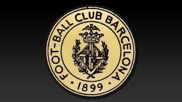

Barcelona Futebol Clube, também conhecido como Barça, é um dos clubes mais populares e bem-sucedidos do futebol mundial. Fundado em 1899 por um grupo de jogadores suíços, ingleses e espanhóis, o clube foi criado com o objetivo de promover o futebol na cidade de Barcelona.
Nos primeiros anos de sua existência, o Barcelona jogava principalmente contra equipes locais e regionais. No entanto, em 1902, o clube se juntou à Federação Espanhola de Futebol e começou a competir contra outros times espanhóis.
Durante as primeiras décadas do século XX, o Barcelona conquistou vários títulos regionais e nacionais. No entanto, o clube só se tornou uma força verdadeiramente dominante na década de 1950, quando ganhou cinco campeonatos espanhóis consecutivos.
Um dos momentos mais memoráveis da história do Barcelona ocorreu em 1988, quando o clube ganhou sua primeira Liga dos Campeões da UEFA. Com um time estrelado liderado pelo lendário Johan Cruyff, o Barcelona derrotou o Steaua Bucareste na final por 2 a 0.
Nos anos 90, o Barcelona continuou a ser um dos melhores times da Europa, com destaque para as performances do brasileiro Romário e do espanhol Pep Guardiola. No entanto, foi na década de 2000 que o clube realmente brilhou, graças em grande parte à influência do técnico holandês Frank Rijkaard e de jogadores como Ronaldinho, Xavi e Andrés Iniesta.
Durante este período, o Barcelona ganhou quatro vezes a Liga dos Campeões da UEFA, seis campeonatos espanhóis e dois Mundiais de Clubes da FIFA. O clube também se tornou famoso por sua filosofia de jogo conhecida como "tiki-taka", que enfatiza a posse de bola e o controle do jogo.

Hoje, o Barcelona continua a ser um dos clubes mais populares e bem-sucedidos do futebol mundial, com uma legião de fãs leais em todo o mundo. Com uma equipe repleta de talentos como Lionel Messi, Luis Suárez e Neymar, o futuro do clube parece brilhante.